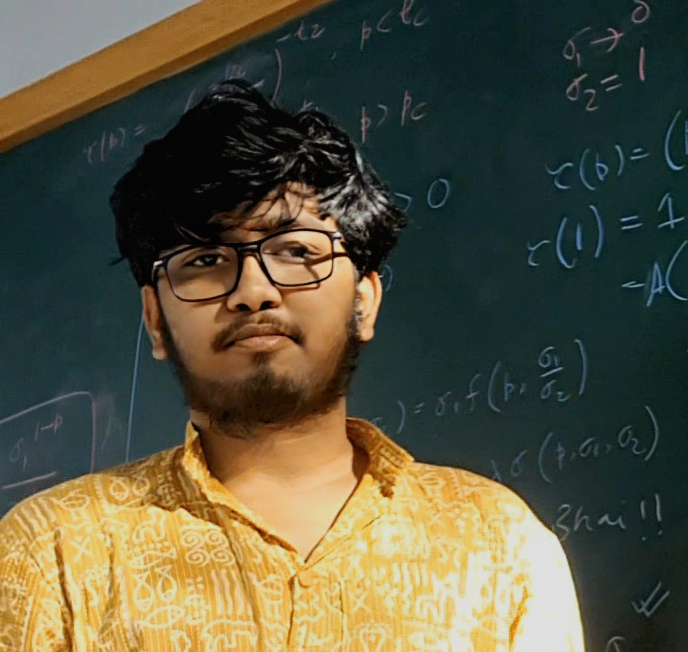
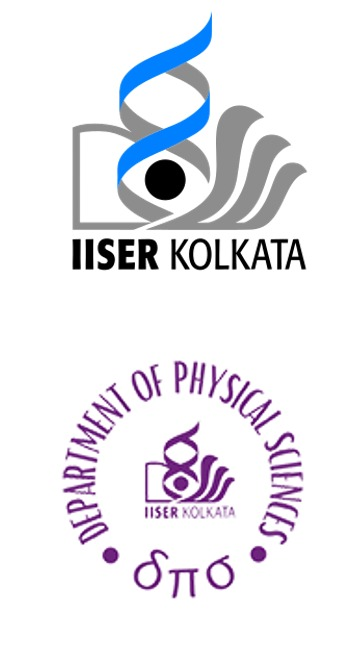

|  |
Bikram Pal
Department of Physical Sciences
Campus Road, Mohanpur, 741246, India |
 |
নমস্কার! (Greeting!)
I am Bikram Pal (বিক্রম পাল), a 3rd year Master of Science (Integrated) student at the Department of Physical Sciences, Indian Institute of Science Education and Research Kolkata. Apart from physics, I also take interest in problems of pure mathematics (real and complex analysis).
My research interest is broadly to understand the physics of complex systems. I have held a couple of research internship positions in the past that have helped me to grow in this direction. My current spectrum of research is broad and multifractal :) due to that reason. My interests span both equilibrium and non-equilibrium statistical physics : Theory of critical phenomena, Phase transistions, Percolation theory, Statistical theory of turbulence and its phenomenology. Recently I got opportunity to work at the Max-Planck-Institut für Physik komplexer Systeme (MPIPKS) Dresden to work with Prof. Frank Jülicher and his group where I will work on Physics of Life. I am currently working in collaboration with the International Centre for Theoretical Sciences, Tata Institute of Fundamental Research (ICTS-TIFR), Bengaluru (as an NIUS scholar of 2024 batch) with Prof. Samriddhi Sankar Ray and Prof. Deepak Dhar.
|
Besides, I am a football aficionado and an unapologetic fan of Mohunbagan (মোহনবাগান), FC Barcelona and Lionel Messi. This passion has kept me awake through countless derbies and Champions League nights for nearly a decade, gradually turning me into a (self-proclaimed) football pundit. Also I have good (in my opininion) taste in Bengali and Hindi music; especially of Ustad Rahat Fateh Ali Khan, Anupam Roy and Mohammed Rafi. |

|
You can download a PDF version of my brief CV here (CV).